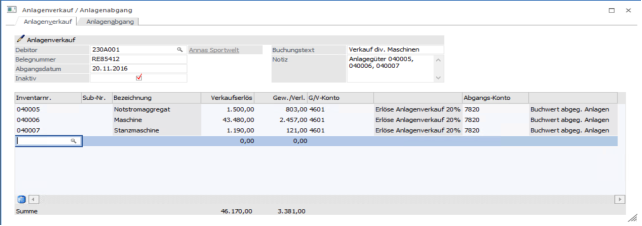
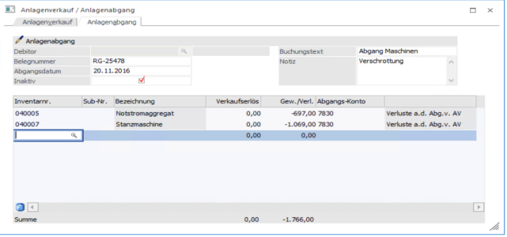
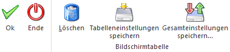
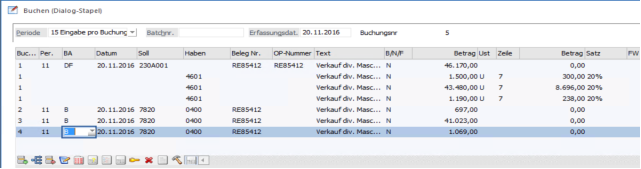
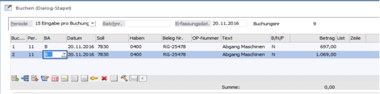

Das Programm ist in zwei Register unterteilt.
Im Anlagenverkauf wird der Verkauf eines oder mehrerer Anlagegüter für einen Debitor in einer Tabelle erfasst und als Buchungsstapel (Nr. -33) in der Finanzbuchhaltung abgestellt. Dieser Buchungsstapel enthält sowohl eine DF-Buchung mit je einer Splitbuchung pro Anlage für den Verkauf, als auch pro Anlage eine B-Buchung für die Ausbuchung des Restbuchwertes.
Im Anlagenabgang wird der Abgang eines oder mehrerer Anlagegüter in einer Tabelle erfasst und als Buchungsstapel (Nr. -35) in der Finanzbuchhaltung abgestellt. Dieser Buchungsstapel enthält pro Anlage eine B-Buchung für die Ausbuchung des Restbuchwertes.
In dem Menüpunkt
1 Buchen
1 Anlagenverkauf / Anlagenabgang
werden die verkauften bzw., abgehenden Anlagegüter erfasst. Dieser Programmpunkt kann auch mit der Tastenkombination
1 STRG + R
aufgerufen werden.
Anlagenverkauf

Ø Debitor - nur beim Anlagenverkauf aktiv
Eingabe der Debitorennummer oder Auswahl über den Konten-Matchcode mit F9.
Dieser Debitor wird im FIBU-Buchungsstapel automatisch als Sollkonto in der DF-Buchung eingetragen und dadurch wird beim Verbuchen ein OP für diesen Debitoren angelegt.
Anlagenabgang

Ø Belegnummer
20-stellige alphanumerische Eingabe der Belegnummer. Diese Belegnummer wird in den FIBU-Buchungsstapel als Beleg-Nr. übernommen.
Ø Abgangsdatum
Eingabe des Abgangsdatums
Aufgrund des Abgangsdatums und der im Anlagenstamm hinterlegten Abgangsregel errechnen sich die anteilige Abgangs-AfA und der Abgangsbuchwert.
Hinweis
Wird für die Anlage die Abgangsregel "monatsgenau" verwendet, wird auch der Abgangsmonat für die Berechnung der Abgangs-AfA berücksichtigt.
Hinweis
Für Mandanten mit Länderkennzeichen "Tschechien" wird immer eine Halbjahresabschreibung gebucht, egal wann der Abgang im Wirtschaftsjahr stattfindet, d.h. ob im ersten oder zweiten Halbjahr.
Achtung
Wenn bei einem Abgang der Erste des Monats als Abgangsdatum eingegeben wird, wird die Abgangs-AfA nur bis zum Vormonat gerechnet.
Ø Inaktiv
Wird die Checkbox aktiviert, dann wird das Anlagegut nach dem Abgang automatisch im Anlagenstamm auf inaktiv gesetzt. Inaktive Anlagegüter können über das Programm Reorganisieren gelöscht werden, wenn sie keinerlei Bewegungen aufweisen und im vorangegangenen Wirtschaftsjahr abgegangen sind.
Inaktive Anlagegüter werden im Anlagen-Matchcode nicht mehr mit angezeigt.
Ø Buchungstext
Eingabe eines Buchungstextes bis zu 50 Zeichen
Dieser Buchungstext wird in den FIBU-Buchungsstapel als Text übernommen.
Ø Notiz
Eingabe bis zu 2000 Zeichen Freitext (Notizblock-Funktion). Die Notiz wird in den FIBU-Buchungsstapel als Buchungs-Notiz übernommen.
Ø Inventarnr.
Eingabe der Inventarnummer, lt. Anlage im Menüpunkt Anlagenstamm. Die Matchcode-Funktion erleichtert Ihnen die Suche.
Ø Sub-Nr.
Eingabe der Subnummer, lt. Anlage im Menüpunkt Anlagenstamm; auch hier steht Ihnen die Matchcode-Funktion zur Verfügung.
Ø Verkaufserlös
Eingabe des Verkaufserlöses. Der Verkaufserlös wird netto, ohne Umsatzsteuer eingegeben. Die Steuer wird im FIBU-Buchungsstapel automatisch aufgrund der im Gewinn-/ Verlustkontos hinterlegten Steuerzeile errechnet.
Anhand des Verkaufserlöses und des Abgangsbuchwertes wird der Gewinn bzw. Verlust ermittelt, welcher im nächsten Feld zur Info und auch auf der Liste der Abgänge ausgewiesen wird.
Ø Gew./Verl.
Der Gewinn bzw. Verlust ist ein Infofeld und kann nicht editiert werden. Anhand des Verkaufserlöses und des Abgangsbuchwertes wird der Gewinn bzw. Verlust ermittelt. Bei der Errechnung des Abgangsbuchwertes wird die anteilige AfA bis zum Abgangsdatum, abhängig von der im Anlagenstamm hinterlegten Abgangsregel, berücksichtigt.
Ø G/V-Konto - nur bei Anlagenverkauf
Eingabe des Erlöskontos für den Anlagenverkauf (Buchgewinn) bzw. (Buchverlust). Es wird das im Anlagenstamm hinterlegt Konto vorgeschlagen. Ist im Anlagenstamm kein Anlagenverk. (Buchgew.) bzw. (Buchverl.) - Konto eingetragen, werden die Konten aus dem Anlagenparameter verwendet.
Je nachdem, ob ein Gewinn oder Verlust errechnet wird, wird das entsprechende G/V-Konto bereits vorgeschlagen.
Das Gewinn- oder Verlustkonto muss ein Steuerkennzeichen und einen Steuersatz hinterlegt haben, damit bei der Übergabe der Erlösbuchung des Anlagenverkaufs in die FIBU auch die entsprechende Umsatzsteuer berechnet wird.
Beispiel 1
Anlagenverk. (Buchgew.) = Konto Erlöse aus Anlagenverkauf 20 % USt. (bei Buchgewinn)
Anlagenverk. (Buchverl.) = Konto Erlöse aus Anlagenverkauf 20 % USt. (bei Buchverlust)
Ø Abgangs-Konto
Eingabe des Sachkontos, das beim Anlagenverkauf für die Ausbuchung des Restbuchwertes in der FIBU herangezogen wird, wenn durch den Anlagenverkauf ein Buchgewinn bzw. ein Buchverlust entsteht. Es wird das im Anlagenstamm hinterlegt Konto vorgeschlagen. Ist im Anlagenstamm kein Abgang BW (Buchgew.) bzw. (Buchverl.) - Konto eingetragen, werden die Konten aus dem Anlagenparameter verwendet.
Je nachdem, ob ein Gewinn oder Verlust errechnet wird, wird das entsprechende Abgangs-Konto bereits vorgeschlagen.
Beispiel 2
Abgang BW (Buchgew.) = Konto Anlagenabgänge Sachanlagen (Restbuchwert bei Buchgewinn)
Abgang BW (Buchverl.) = Konto Anlagenabgänge Sachanlagen (Restbuchwert bei Buchverlust)
Buttons

Ø OK
Beim Speichern des Anlagenverkaufs / Anlagenabgangs mit OK oder F5 wird der Abgang in der Anlagenbuchhaltung gebucht und ist im Anlagenstamm in der Anlagenentwicklung als Abgang eingetragen. Außerdem wird ein FIBU-Buchungsstapel (Nr. -33 für Anlagenverkauf / -35 für Anlagenabgang) für den Anlagenverkauf / Anlagenabgang erstellt und in die Finanzbuchhaltung übergeben. Der Anlagenverkauf-Buchungsstapel enthält sowohl eine DF-Buchung mit je einer Splitbuchung pro Anlage für den Verkauf, als auch pro Anlage eine B-Buchung für die Ausbuchung des Restbuchwertes. Der Anlagenabgang-Buchungsstapel enthält pro Anlage eine B-Buchung für die Ausbuchung des Restbuchwertes.
Je nachdem, ob die steuerrechtliche oder handelsrechtliche Buchungsübergabe im Anlagenparameter definiert ist, wird das steuerrechtliche oder handelsrechtliche FIBU-Konto in den FIBU-Buchungsstapel übergeben.
Ist im Anlagenparameter die Checkbox "Restbuchwert bei Anlagenverkauf auf Wertberichtigungskonto buchen" aktiviert, wird für die Ausbuchung des Restbuchwertes das im Anlagenstamm hinterlegte Wertberichtigungskonto anstelle des Anlagensachkontos (FIBU-Konto) herangezogen.
Beim Anlagenverkauf / Anlagenabgang werden auch die KORE-Informationen mit in den Buchungsstapel -33 übergeben, wenn im Erlöskonto Anlagenverkauf (Buchgewinn bzw. Buchverlust) eine Kostenart hinterlegt ist. Voraussetzung hierfür ist, dass im Anlagenparameter die Checkbox "Kosten mit FIBU buchen" aktiviert ist, damit die KORE-Buchung mit der Verbuchung des FIBU-Buchungsstapels erfolgt.
Hinweis
Werden mehrere Anlagenverkäufe / Anlagenabgänge durchgeführt, werden alle neuen Buchungen in den Buchungsstapel -33 / -35 angefügt. Somit existiert in der Finanzbuchhaltung nur ein Buchungsstapel -33 /
-35 für alle Anlagenverkäufe / Anlagenabgänge des Wirtschaftsjahres.
Ø Ende
Mit dem Ende Button wird das Fenster geschlossen, ohne dass Buchungen gespeichert oder in einem Buchungsstapel abgestellt werden.
Ø Löschen
Über den Button Löschen können einzelne Zeilen aus der Tabelle gelöscht werden. Es wird die Zeile, die aktiviert ist, gelöscht.
Ø Tabelleneinstellungen speichern
Die Spalten einer Tabelle können grundsätzlich an beliebige Positionen verschoben, bzw. in der Breite entsprechend angepasst werden. Durch Anwahl des Buttons "Tabelleneinstellungen speichern" werden die Einstellungen benutzerspezifisch gespeichert und bei dem nächsten Aufruf des Programmpunktes wieder vorgeschlagen.
Ø Gesamteinstellungen speichern
Im Gegensatz zu "Tabelleneinstellungen speichern" können mit "Gesamteinstellungen speichern" mehrere Tabellenaufbauten gespeichert und nach Wunsch geladen werden. Zusätzlich werden Sonderfunktionen der Tabelle (z.B. "Spalte gruppieren") ebenfalls bei der Speicherung bedacht.
Beispiel eines Anlagenverkauf-Buchungsstapels
In der FIBU wird im Buchen-Dialog-Stapel über den Laden-Button der Buchungsstapel geladen

Beispiel eines Anlagenabgang-Buchungsstapels
In der FIBU wird im Buchen-Dialog-Stapel über den Laden-Button der Buchungsstapel geladen

Stornierung eines Abganges
Ein Abgang, auch wenn er durch einen Anlagenverkauf oder Anlagenabgang erzeugt wurde, kann - solange der Abschreibungslauf noch nicht durchgeführt wurde - im Menü "Anlagenstamm", Register Entwicklung, über den Button Entfernen gelöscht werden.
In der WinLine FIBU müssen die Storno-Buchungen manuell durchgeführt werden.